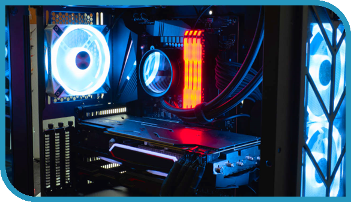

Hello, my name is...
I started my story with programming when the holidays began. I have been interested in computers and technology for many years. By trial and error method, I learned myself how to assemble a computer and select the appropriate components for it. I believe that I fit in with the ICT program because over past few weeks I have enjoyed creating websites. It reminds me of painting because I am capable to "paint" whatever I want with code.
